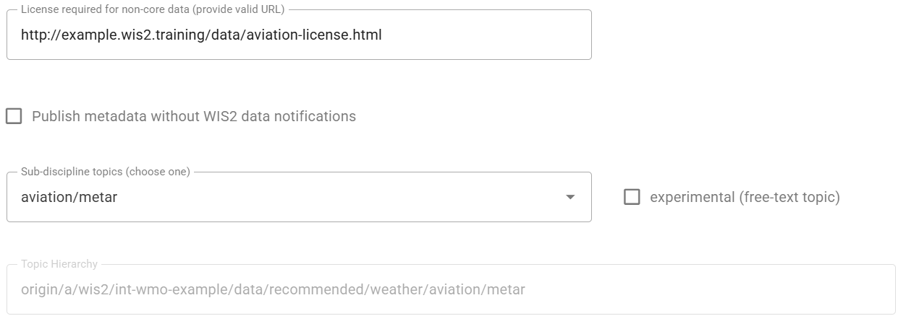
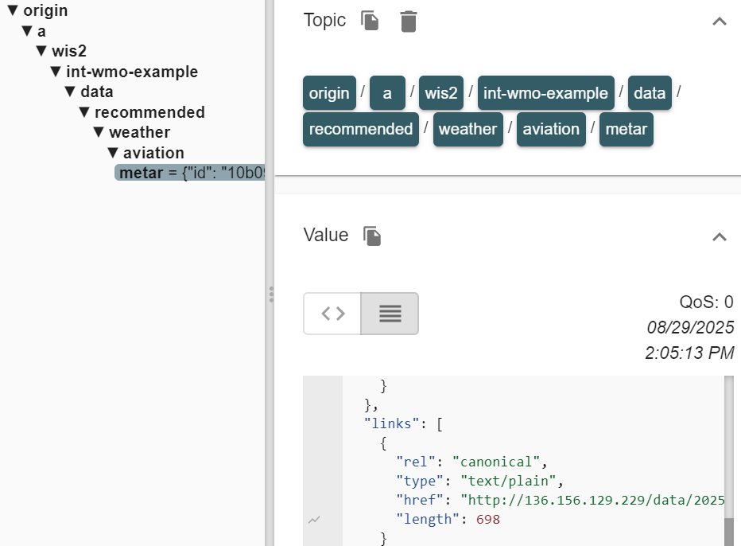

Configuration d'un jeu de données recommandé
Objectifs d'apprentissage
À la fin de cette session pratique, vous serez capable de :
- créer un nouveau jeu de données avec une politique de données 'recommended'
- ajouter un jeton d'accès au jeu de données
- vérifier que le jeu de données ne peut pas être consulté sans le jeton d'accès
- ajouter le jeton d'accès aux en-têtes HTTP pour accéder au jeu de données
- ajouter un fichier de licence personnalisé hébergé sur votre instance wis2box
Introduction
Les données sont partagées sur WIS2 conformément à la Politique de Données Unifiée de l'OMM, qui définit deux catégories de données.
core : données fournies gratuitement et sans restriction, sans frais et sans conditions d'utilisation
recommended : données pouvant être soumises à des conditions d'utilisation et/ou à une licence
Les données partagées en tant que 'recommended' :
- peuvent être soumises à des conditions d'utilisation et de réutilisation
- peuvent être soumises à des contrôles d'accès
- ne sont pas mises en cache par les Global Caches de WIS2
- doivent avoir un enregistrement de métadonnées incluant une URL de licence
Téléchargement des données recommandées
Étant donné que les Global Caches de WIS2 ne mettent pas en cache les données recommandées, vous ne verrez pas de notifications sur le sujet cache/a/wis2/<centre-id>/data/recommended/..
Le consommateur de données doit télécharger les données depuis le serveur de données hébergé par le fournisseur de données, en utilisant l'URL canonique fournie dans les notifications sur le sujet origin/a/wis2/<centre-id>/data/recommended/...
Dans cette session pratique, vous allez créer un nouveau jeu de données avec une politique de données 'recommended' en utilisant l'éditeur de jeux de données dans wis2box-webapp. Vous apprendrez également à fournir une licence auto-hébergée et à ajouter, si nécessaire, un contrôle d'accès.
Données aéronautiques dans WIS2
Pour cet exercice, il vous est demandé de créer un jeu de données pour partager des données METAR, un format standard pour les observations météorologiques aéronautiques.
Les données aéronautiques dans WIS2 doivent toujours être partagées en tant que 'recommended' afin de se conformer aux réglementations de partage des données aéronautiques spécifiées par l'Organisation de l'Aviation Civile Internationale (OACI).
Préparation
Assurez-vous d'avoir un accès SSH à votre machine virtuelle étudiante et que votre instance wis2box est opérationnelle.
Vérifiez que vous êtes connecté au broker MQTT de votre instance wis2box en utilisant MQTT Explorer. Vous pouvez utiliser les identifiants publics everyone/everyone pour vous connecter au broker.
Assurez-vous d'avoir un navigateur web ouvert avec le wis2box-webapp pour votre instance en accédant à http://YOUR-HOST/wis2box-webapp.
Créer un nouveau jeu de données avec une politique de données 'recommended'
Accédez à la page 'dataset editor' dans wis2box-webapp et créez un nouveau jeu de données.
Pour "Centre ID", utilisez le même identifiant que celui utilisé dans les sessions pratiques précédentes.
Sélectionnez Template = 'other' pour indiquer que vous n'utiliserez pas de modèle prédéfini pour le jeu de données :

Cliquez sur 'CONTINUE TO FORM' pour continuer.
Pour cet exercice, veuillez créer un jeu de données pour les données METAR aéronautiques :
- choisissez un 'Local ID' approprié pour le jeu de données, par exemple 'aviation-metar'
- fournissez un titre et une description pour le jeu de données
- choisissez WMO Data Policy = 'recommended'

Notez que lorsque vous sélectionnez WMO Data Policy = 'recommended', l'éditeur de jeux de données ajoute automatiquement un champ pour 'License URL', qui est obligatoire pour les jeux de données recommandés.
Ensuite :
- Utilisez
WIS2BOX_URL/data/aviation-license.htmlpour pointer vers un fichier de licence personnalisé hébergé sur votre instance, en remplaçantWIS2BOX_URLpar l'URL de votre instance wis2box. - Sélectionnez 'Sub Disciple Topic' = 'aviation/metar' pour définir le sujet approprié pour ce jeu de données.

À propos de l'URL de licence
L'URL de licence associée à un jeu de données recommandé informe les consommateurs de données des conditions d'utilisation des données.
Vous pouvez utiliser une URL pointant vers un fichier de licence hébergé sur votre instance wis2box, ou une URL pointant vers un fichier de licence hébergé sur un site web externe.
Pour cet exercice, nous utiliserons un fichier de licence auto-hébergé. Vous ajouterez le fichier 'aviation-license.html' à votre instance wis2box plus tard dans cette session pratique pour garantir que l'URL de licence est valide.
Étant donné que vous avez sélectionné Template = 'other', aucun mot-clé n'est pré-rempli pour le jeu de données. Ajoutez un minimum de 3 mots-clés pertinents pour le jeu de données :

Continuez à remplir les champs obligatoires pour les Propriétés Spatiales et les Informations de Contact. Cliquez sur 'Validate form' pour vérifier que tous les champs obligatoires sont remplis.
Étant donné que vous avez sélectionné Template = 'other', aucun mappage de jeu de données n'est défini.
Ajoutez le plugin pour 'Universal data without conversion' et assurez-vous de définir l'extension de fichier sur .txt pour correspondre aux fichiers de données METAR que vous publierez dans ce jeu de données plus tard dans cette session pratique :

Soumettez le jeu de données, en utilisant le jeton d'authentification précédemment créé, et vérifiez que le nouveau jeu de données est créé dans wis2box-webapp.
Vérifiez dans MQTT Explorer que vous recevez le message de notification WIS2 annonçant le nouvel enregistrement de métadonnées de découverte sur le sujet origin/a/wis2/<your-centre-id>/metadata.
Examiner votre nouveau jeu de données dans wis2box-api
Affichez la liste des jeux de données dans wis2box-api en ouvrant l'URL WIS2BOX_URL/oapi/collections/discovery-metadata/items dans votre navigateur web, en remplaçant WIS2BOX_URL par l'URL de votre instance wis2box.
Ouvrez le lien du jeu de données que vous venez de créer et faites défiler jusqu'à la section 'links' de la réponse JSON :

Vous devriez voir un lien pour "License for this dataset" pointant vers l'URL fournie dans l'éditeur de jeux de données.
Si vous cliquez sur le lien, vous obtiendrez une erreur car le fichier de licence n'a pas encore été ajouté à votre instance wis2box.
Ajouter le fichier de licence à votre instance wis2box
Assurez-vous que le lien pour "License for this dataset" dans les métadonnées de votre jeu de données recommandé fonctionne comme prévu.
Téléchargez cet exemple de fichier de licence aéronautique : aviation-license.html
À propos de l'exemple de fichier de licence aéronautique
Il s'agit d'un exemple de fichier de licence pour les données aéronautiques. Vous pouvez modifier le fichier pour inclure des informations pertinentes pour votre organisation.
Pour télécharger ce fichier, utilisez la console MinIO disponible sur le port 9001 de l'instance wis2box, en accédant à un navigateur web et en visitant http://YOUR-HOST:9001
Les identifiants pour accéder à la console MinIO dans le fichier wis2box.env sont définis par les variables d'environnement WIS2BOX_STORAGE_USERNAME et WIS2BOX_STORAGE_PASSWORD.
Vous pouvez les trouver dans le fichier wis2box.env comme suit :
cat wis2box.env | grep WIS2BOX_STORAGE_USERNAME
cat wis2box.env | grep WIS2BOX_STORAGE_PASSWORD
Une fois connecté à la console MinIO, téléchargez le fichier de licence dans le chemin de base du bucket wis2box-public en utilisant le bouton “Upload” :

Après avoir téléchargé le fichier de licence, vérifiez si le fichier est accessible en visitant WIS2BOX_URL/data/aviation-license.html dans votre navigateur web, en remplaçant WIS2BOX_URL par l'URL de votre instance wis2box.
Note
Le proxy web dans wis2box redirige tous les fichiers stockés dans le bucket "wis2box-public" sous le chemin WIS2BOX_URL/data/
Le lien pour "License for this dataset" inclus dans les métadonnées de votre jeu de données recommandé devrait maintenant fonctionner comme prévu.
Ajouter un jeton d'accès au jeu de données
Connectez-vous au conteneur wis2box-management,
cd ~/wis2box
python3 wis2box-ctl.py login
Depuis la ligne de commande à l'intérieur du conteneur, vous pouvez sécuriser un jeu de données en utilisant la commande wis2box auth add-token, avec l'option --metadata-id pour spécifier l'identifiant des métadonnées du jeu de données et le jeton d'accès comme argument.
Par exemple, pour ajouter le jeton d'accès S3cr3tT0k3n au jeu de données avec l'identifiant de métadonnées urn:wmo:md:my-centre-id:core.surface-based-observations.synop :
wis2box auth add-token --metadata-id urn:wmo:md:my-centre-id:aviation-metar S3cr3tT0k3n
Quittez le conteneur wis2box-management :
exit
Publier des données dans le jeu de données
Téléchargez le fichier de données METAR suivant sur votre machine locale :
A_SAKO31RKSL290000_C_RKSL_20250729000055.txt
Ensuite, intégrez ce fichier dans votre ensemble de données en utilisant la console MinIO. Pour accéder à la console MinIO, ouvrez un navigateur web et visitez http://YOUR-HOST:9001, puis connectez-vous en utilisant les identifiants définis dans le fichier wis2box.env par les variables d'environnement WIS2BOX_STORAGE_USERNAME et WIS2BOX_STORAGE_PASSWORD.
Pour intégrer le fichier dans votre ensemble de données, accédez au bucket wis2box-incoming et créez un nouveau dossier portant le nom de l'identifiant des métadonnées de votre ensemble de données. Téléversez ensuite le fichier de données METAR d'exemple dans ce dossier en utilisant le bouton « Upload » :

Assurez-vous que le nom du dossier correspond à l'identifiant des métadonnées de votre ensemble de données et vérifiez que vous recevez des notifications de données WIS2 dans MQTT Explorer, sur le sujet origin/a/wis2/<your-centre-id>/data/recommended/aviation/metar :

Dépannage
Si vous ne recevez pas de notification après avoir téléversé vos données, vous pouvez consulter les journaux récents du conteneur wis2box-management pour résoudre le problème :
docker logs -n100 wis2box-management
Copiez-collez l'URL du lien canonique depuis le message de notification WIS2 dans votre navigateur web. L'URL devrait ressembler à ceci :
http://example.wis2.training/data/2025-07-29/wis/urn:wmo:md:int-wmo-example:aviation-metar/A_SAKO31RKSL290000_C_RKSL_20250729000055.txt
Si vous avez correctement ajouté le jeton d'accès à l'ensemble de données, vous ne devriez pas pouvoir accéder aux données dans votre navigateur web. À la place, vous verrez une ERREUR 401 Authorization Required.
Ajouter le jeton d'accès aux en-têtes HTTP pour accéder à l'ensemble de données
Pour démontrer que le jeton d'accès est nécessaire pour accéder à l'ensemble de données, nous allons reproduire l'erreur que vous avez vue dans le navigateur en utilisant la commande wget en ligne de commande.
Depuis la ligne de commande dans votre VM étudiant, utilisez la commande wget avec le lien canonique que vous avez copié depuis le message de notification WIS2.
wget http://example.wis2.training/data/2025-07-29/wis/urn:wmo:md:int-wmo-example:aviation-metar/A_SAKO31RKSL290000_C_RKSL_20250729000055.txt
Vous devriez voir que la requête HTTP retourne 401 Unauthorized et que les données ne sont pas téléchargées.
Ajoutez maintenant le jeton d'accès aux en-têtes HTTP pour accéder à l'ensemble de données.
wget --header="Authorization: Bearer S3cr3tT0k3n" <canonical-link>
Les données devraient maintenant être téléchargées avec succès.
Supprimer le jeton d'accès de l'ensemble de données
Pour supprimer le jeton d'accès de l'ensemble de données, connectez-vous au conteneur wis2box-management :
cd ~/wis2box
python3 wis2box-ctl.py login
Et utilisez la commande wis2box auth remove-token pour supprimer le jeton d'accès de l'ensemble de données, en utilisant l'option --metadata-id pour spécifier l'identifiant des métadonnées de l'ensemble de données et le jeton d'accès comme argument :
wis2box auth remove-token --metadata-id urn:wmo:md:my-centre-id:aviation-metar S3cr3tT0k3n
Assurez-vous de remplacer urn:wmo:md:my-centre-id:aviation-metar par l'identifiant des métadonnées de votre ensemble de données.
Déconnectez-vous du conteneur wis2box-management :
exit
Et vérifiez que le jeton d'accès a été supprimé en essayant de télécharger à nouveau les données avec wget en ajoutant le jeton d'accès dans les en-têtes HTTP, ou en essayant d'accéder aux données dans votre navigateur web.
Le contrôle d'accès est optionnel, uniquement pour les ensembles de données recommandés
WIS2 spécifie que les ensembles de données recommandés peuvent avoir des contrôles d'accès appliqués aux données. Il n'est pas obligatoire d'ajouter un contrôle d'accès à un ensemble de données recommandé, et vous pouvez vous contenter d'utiliser l'URL de licence pour informer les consommateurs de données des conditions d'utilisation des données. Si vous appliquez un contrôle d'accès, vous êtes responsable de partager le jeton d'accès avec tout consommateur de données nécessitant cet accès.
Si vous appliquez wis2box auth add-token à un ensemble de données avec une politique de données WMO 'core', les Global Caches signaleront une erreur au Global Monitoring car ils ne pourront pas télécharger les données, et votre ensemble de données sera considéré comme non conforme aux règlements techniques de WIS2.
Conclusion
Félicitations !
Au cours de cette session pratique, vous avez appris à :
- créer un nouvel ensemble de données avec une politique de données 'recommended'
- ajouter un fichier de licence personnalisé à votre instance wis2box
- ajouter un jeton d'accès à l'ensemble de données
- valider que l'ensemble de données ne peut pas être accessible sans le jeton d'accès
- ajouter le jeton d'accès aux en-têtes HTTP pour accéder à l'ensemble de données